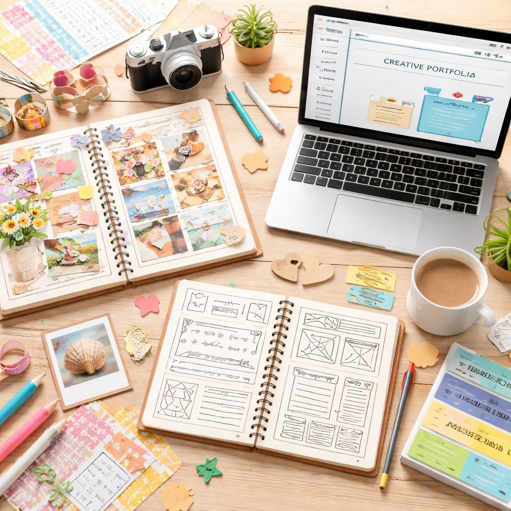

About Me
Hi, I'm Jennifer Morrison, a passionate web designer and developer based in Raleigh, NC. With a strong background in HTML, CSS, and JavaScript, I specialize in creating functional and accessible web pages that provide an exceptional user experience. I am dedicated to continuous learning and staying up-to-date with the latest industry trends to ensure my work is innovative and effective.
My interest in web development grew out of a lifelong love for design and storytelling. As a high school yearbook editor and an avid scrapbooker, I’ve always enjoyed organizing content visually and creating meaningful layouts. When my son took a web development class during our homeschool journey, it sparked my curiosity and inspired me to explore how those same creative skills could translate into building websites.
Over the years, I have honed my skills through various projects and collaborations, allowing me to develop a keen eye for design and a deep understanding of coding principles. I thrive in team environments and enjoy collaborating with others to bring creative ideas to life.
I look forward to the opportunity to work together on exciting projects in the future!